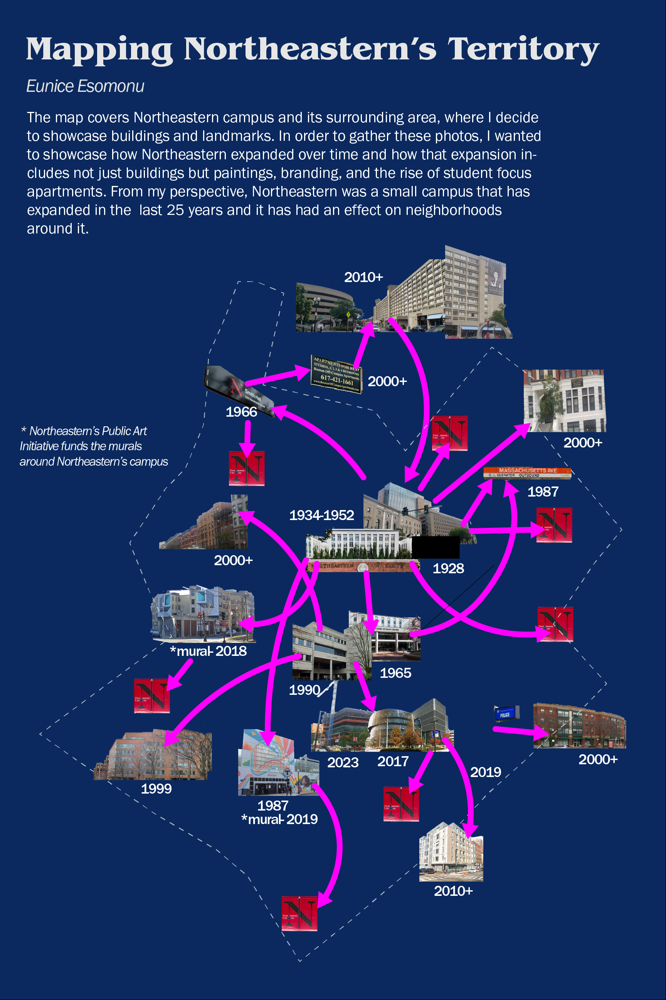

Mapping Northeastern Territory
Inspired by psychogeography, the map covers Northeastern's Boston campus and its surrounding neighborhoods. My focus was to see, using photography and Adobe Illustrator, how Northeastern buildings and landmarks. Using photos, Adobe Photoshop, and Adobe Illustrator, I wanted to show how Northeastern has expanded throughout the years and how that expansion has affected surrounding areas (neighborhoods, businesses, housing, etc) over time.
Role: Strategy, Photographer, Designer
Tools: Adobe Illustrator, Adobe Photoshop, Smartphone (photos)